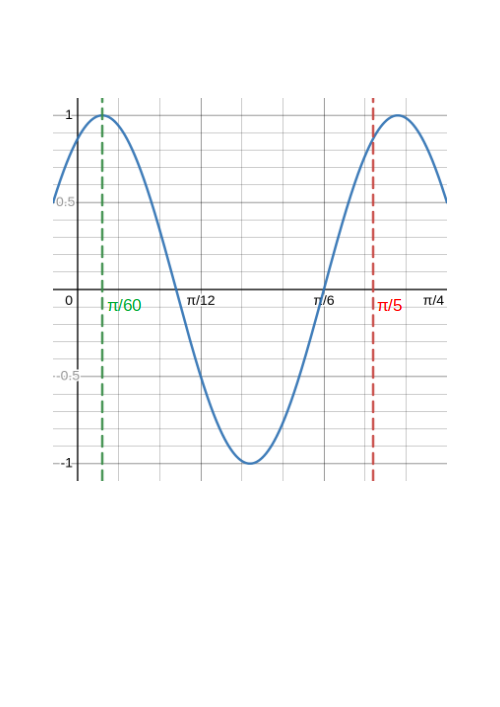

Exercise Set 3 Answers
These exercises cover the topic of Trigonometry.
Tip: always start by drawing a labelled diagram in trigonometry questions.
Consider the smaller of the two angles between the hour hand and minute hand of a clock. Write the angles at the following times in both degrees and radians (in terms of \(\pi\)).
- 6:00
- 3:00
- 4:00
- 4:30
- 6:45
Answers:
- \(180^\circ\), \(\pi\text{ rad}\)
- \(90^\circ\), \(\frac{\pi}{2}\text{ rad}\)
- \(60^\circ\), \(\frac{2\pi}{3}\text{ rad}\)
- \(45^\circ\), \(\frac{\pi}{4}\text{ rad}\)
- \(67.5^\circ\), \(\frac{3\pi}{8}\text{ rad}\)
Convert the following angles from degrees to radians (leave your answer in terms of \(\pi\) where possible, or to 2 d.p.).
- \(330^\circ\)
- \(22.5^\circ\)
- \(27^\circ\)
- \(35^\circ\)
Answers:
- \(\frac{11}{6}\pi\text{ rad}\)
- \(\frac{\pi}{8}\text{ rad}\)
- \(\frac{3}{20}\pi\text{ rad}\) or \(0.47\text{ rad}\)
- \(\frac{7}{36}\pi\text{ rad}\) or \(0.61\text{ rad}\)
A bearing is the angle measured clockwise from North to the direction of interest. A point \(K\) is 12km due west of a second point \(L\) and 25km due south of a third point \(M\). Calculate the bearing of \(L\) from \(M\).
Answers:
Drawing a right angled triangle \(MKL\) the angle \(\angle KML\) is \[\tan(\angle KML)=\frac{12}{25}\quad\implies\quad \angle KML=\tan^{-1}\frac{12}{25}=25.6^\circ\] The bearing of \(L\) from \(M\) is the angle clockwise from a line pointing North from \(M\), so the bearing is: \[180^\circ -25.6^\circ=154.4^\circ.\]
Solve (i.e. find all unkown angles and side lengths) the triangle \(ABC\) where \(A = 53^\circ\), \(B = 61^\circ\) and \(a = 12.6\)cm.
Answers:
We first find angle \(C\):
\[C=180^\circ-61^\circ-53^\circ=66^\circ.\]
Now using the sine rule:
\[b=\frac{a}{\sin(A)}\sin(B)=\frac{12.6}{\sin(53^\circ)}\sin(61^\circ)=13.8\text{ cm}\]
and
\[c=\frac{a}{\sin(A)}\sin(C)=\frac{12.6}{\sin(66^\circ)}\sin(53^\circ)=14.4\text{ cm}.\]
Let \(AOB\) be a triangle. \(OA = 60\)mm, \(AB = 180\)mm and \(OB = 200\)mm. Find angle \(A\).
Answers:
Using the cosine rule: \[\begin{align*}\cos(A)&=\frac{b^2+c^2-a^2}{2bc}\\ &=\frac{60^2+180^2-200^2}{2\times 60\times 180}\\ &=-0.185 \end{align*}\] which gives \[A=\cos^{-1}(-0.185)=101^\circ.\]
An angle of elevation is an angle that an imaginary straight line must be raised from the horizontal ground to line up with a point of interest above the ground. An observer is standing at a point \(O\) which is \(30\)m from the base of a tower. On top of the tower is a vertical mast. If the angles of elevation of the top of the tower and the top of the mast from \(M\) are \(40^\circ\) and \(50^\circ\) respectively, calculate the height of the mast.
Answers:
Let the base of the tower be point \(B\), the top of the tower point \(T\) and the top of the mast point \(M\). Then there are two right-angled triangles: \(OBT\) and \(OBM\). We have \(OB=30\)m, angle \(\angle BOT=40^\circ\) and angle \(\angle BOM=50^\circ\). We need to calculate \(TM\). Using trig. ratios:
\[BT=OB\tan(\angle BOT)=30\tan^{-1}(40^\circ)=25.2\text{ m}\] \[BM=OB\tan(\angle BOM)=30\tan^{-1}(50^\circ)=35.8\text{ m}\]
and hence
\[TM=OM-OT=35.8-25.2=10.6\text{ m}.\]
The small hand of a clock is 75% the length of the long hand. Calculate the distance between the ends of the hands at 5 o’clock.
Answers:
Let the distance between the ends of the hands be \(d\) and the length of the long hand \(x\). Then the length of the short hand is \(0.75x\). The angle at 5 o’clock is \(150^\circ\). Using the cosine rule:
\[d^2=(0.75x)^2+x^2-1.5x^2\cos(150^\circ)=2.86x^2\] and \(d=1.69x.\)
A student \(1.8\)m tall is standing \(24\)m away from a tree and using an eye level instrument to measure the angle of elevation. The angle measured to the top of the tree is \(12^\circ 34'\), calculate the height of the tree. (Degrees can be further subdivided in to minutes denoted \(x'\) and seconds denoted \(x''\), with \(1'\) being \(1/60\) of a degree and \(1''\) being \(1/60\) of a minute. To use a calculator you will first need to convert minutes and seconds to decimals.)
Answers:
Let the student be at position \(O\) with eye-level \(E\), the base of the tree at position \(B\) and the top of the tree at position \(T\). Drawing a line parallel to \(OB\) from \(E\) to the tree, let the intersection point be \(S\). We have \(OE=BS=1.8\text{ m}\) (or perhaps more realistically we could use 1.7m for eye-level), \(OB=ES=24\text{ m}\) and \(\angle SET=12^\circ 34'\). First, we convert the angle to decimal: \[12^\circ 34'=12^\circ + \frac{34}{60}=12^\circ + 0.57^\circ=12.57^\circ.\] Now, \[ST=ES\tan(\angle SET)=24\tan(12.57^\circ)=5.4\text{ m}\] so \[BT=BS+ST=5.4+1.8=7.2\text{ m}.\]
The angles of elevation of a navigation balloon that is flying in between two points on the ground \(A\) and \(B\) are \(48^\circ\) and \(62^\circ\) respectively. If \(A\) and \(B\) are \(0.3\)km apart, calculate the height of the balloon.
Answers:
Let the ballon be at point \(C\), then we have a triangle \(ABC\). Angle \(C\) is \(C=180-48-62=70^\circ\). We now find the length of \(BC\) using the sine rule:
\[BC=\frac{AB}{\sin(C)}\sin(A)=\frac{0.3}{\sin(70^\circ)}\sin(48^\circ)=0.237\text{ km}\] Now dropping a perpendicular from \(C\) to the ground at a point \(D\) (on the line \(AB\)) we have a right angled triangle \(BDC\). Using \(\sin(\theta)=Opp./Hyp.\) the height is then \[DC=BC\sin(C)=0.237\sin(62^\circ)=0.21\text{ km}.\]
The figure below shows a tetrahedron with an equilateral triangle of side 2m forming the base and isosceles triangles of equal side 3m forming the slanting faces. Calculate:
- The height of the tetrahedron \(ND\);
- The angle that edge \(DA\) makes with the plane \(ABC\);
- The angle between the planes \(ACD\) and \(ACB\).
Answers:
\(ABC\) is an equilateral triangle, so each of its angles are \(60^\circ\). By symmetry, \(N\) is in the centre of triangle \(ABC\). Therefore \(\angle ANB=120^\circ\) and \(\angle BAN=30^\circ\). Using the sine rule:
\[AN=\frac{2}{\sin(120^\circ)}\sin(30^\circ)=1.15\text{ m}.\]
Now using Pythagoras on right-angled triangle \(AND\):
\[ND=\sqrt{AD^2-AN^2}=\sqrt{3^2-1.15^2}=\sqrt{7.68}=2.77\text{ m}\]
This is given by angle \(\angle NAD\), which can be found using \(\cos(\theta)=Adj./Hyp.\)
\[\cos(\angle NAD)=\frac{1.15}{3}=0.385\implies \angle NAD=\cos^{-1}(0.385)=67.4^\circ.\]
By similar reasoning to the above, this is left for the reader to verify as being \(78.2^\circ\).
Write the following in the form \(R\cos(\omega t\pm \beta)\).
- \(-2\sin(\omega t) + 5\cos(\omega t)\)
- \(-5\cos(\omega t) + 5 \sin(\omega t)\)
Answers:
Using the compound angle identity
\[R\cos(\omega t+\beta)=R(\cos(\omega t)\cos(\beta)-\sin(\omega t)\sin(\beta))\] and comparing the r.h.s. with \(-2\sin(\omega t) + 5\cos(\omega t)\) and equating coefficients of sin and cos, \[R\cos(\beta)=5\quad\text{and}\quad R\sin(\beta)=2.\] Since \(\sin(\theta)\) and \(\cos(\theta)\) are both positive only for \(0^\circ\leq\theta\leq 90^\circ\) (i.e. in the first quadrant) then \[\beta=\tan^{-1}\left(\frac{2}{5}\right)=21.80^\circ\quad\text{or}\quad 0.38\text{ rad}.\] Now using \[\cos^2(\theta)+\sin^2(\theta)=1\] we have \[R^2cos^2(\beta)+R^2\sin(\beta)=R^2(\cos^2(\beta)+\sin(\beta))=R^2\] so \[R=\sqrt{5^2+2^2}=\sqrt{29}.\] Finally we have \[-2\sin(\omega t) + 5\cos(\omega t)=\sqrt{29}\cos(\omega t + 0.38).\]
Using the compound angle identity
\[R\cos(\omega t-\beta)=R(\cos(\omega t)\cos(\beta)+\sin(\omega t)\sin(\beta))\] and comparing the r.h.s. with \(-5\cos(\omega t) + 5\sin(\omega t)\) and equating coefficients of sin and cos, \[R\cos(\beta)=-5\quad\text{and}\quad R\sin(\beta)=5.\] Since \(\sin(\theta)\) is positive and \(\cos(\theta)\) is negative only for \(90^\circ\leq\theta\leq 180^\circ\) (i.e. in the second quadrant) then \[\beta=180^\circ-\tan^{-1}\left(\frac{5}{5}\right)=135^\circ\quad\text{or}\quad 2.36\text{ rad}.\] Now using \[\cos^2(\theta)+\sin^2(\theta)=1\] we have \[R^2cos^2(\beta)+R^2\sin(\beta)=R^2(\cos^2(\beta)+\sin(\beta))=R^2\] so \[R=\sqrt{5^2+5^2}=5\sqrt{2}.\] Finally we have \[-5\cos(\omega t) + 5\sin(\omega t)=5\sqrt{2}\cos(\omega t + 2.36).\]
In a spring-mass system the motion of the mass is described by \[x=A\cos(\omega t)+B\sin(\omega t)\] where \(x\) is the distance of the mass from its equilibrium position, \(\omega\) is the natural frequency of oscillations, and \(A\) and \(B\) are constants. For \(A=\sqrt{3}\), \(B=1\) and \(\omega=10\):
- Write \(x\) in the form \(R\cos(\omega t-\beta)\) and state the amplitude of \(x\).
- Sketch one complete cycle of \(x\).
Answers:
Using the compound angle identity
\[R\cos(\omega t-\beta)=R(\cos(\omega t)\cos(\beta)+\sin(\omega t)\sin(\beta))\] and comparing the r.h.s. with \(\sqrt{3}\cos(10 t) + \sin(10 t)\) and equating coefficients of sin and cos, \[R\cos(\beta)=\sqrt{3}\quad\text{and}\quad R\sin(\beta)=1.\] Since \(\sin(\theta)\) and \(\cos(\theta)\) are both positive only for \(0^\circ\leq\theta\leq 90^\circ\) (i.e. in the first quadrant) then \[\beta=\tan^{-1}\left(\frac{1}{\sqrt{3}}\right)=30\circ\quad\text{or}\quad \frac{\pi}{6}\text{ rad}.\] Now using \[\cos^2(\theta)+\sin^2(\theta)=1\] we have \[R^2cos^2(\beta)+R^2\sin(\beta)=R^2(\cos^2(\beta)+\sin(\beta))=R^2\] so \[R=\sqrt{\sqrt{3}^2+1^2}=2\] Finally we have \[x(t)=\sqrt{3}\cos(10 t) + \sin(10 t)=2\cos(10 t -\frac{\pi}{6}).\]
From this we can read off the amplitude as \(R=2\).
The period is \(T=\frac{2\pi}{10}=\frac{\pi}{5}\) and the displacement of the peak at \(0\) is \(\frac{\pi/6}{10}=\frac{\pi}{60}\).
